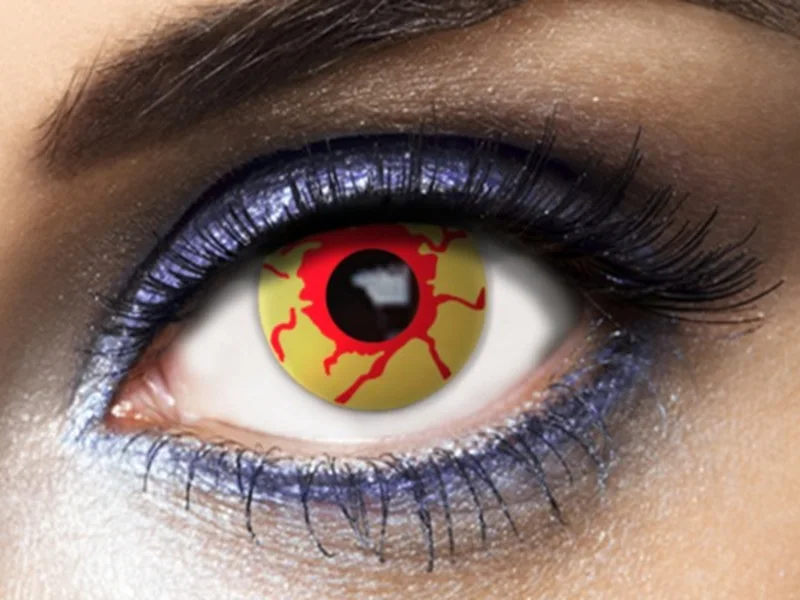
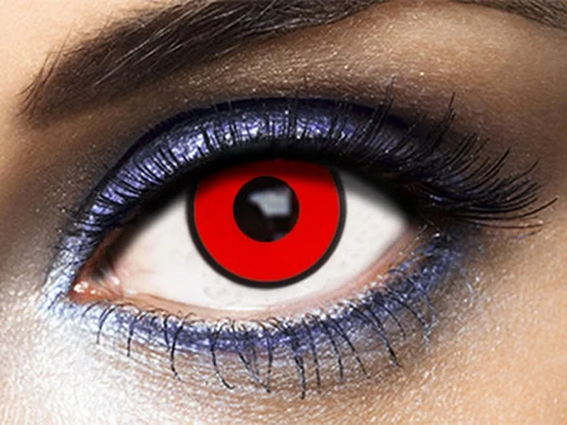
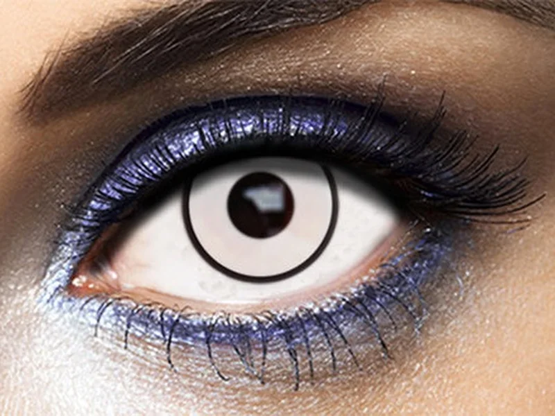
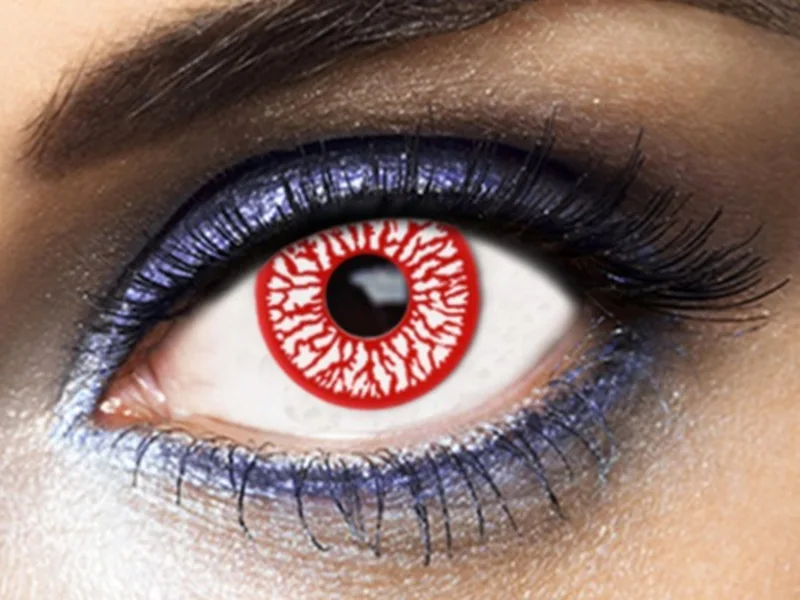
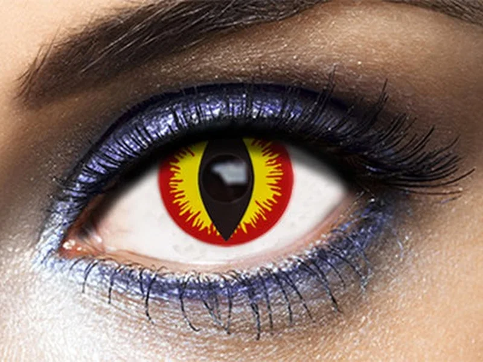
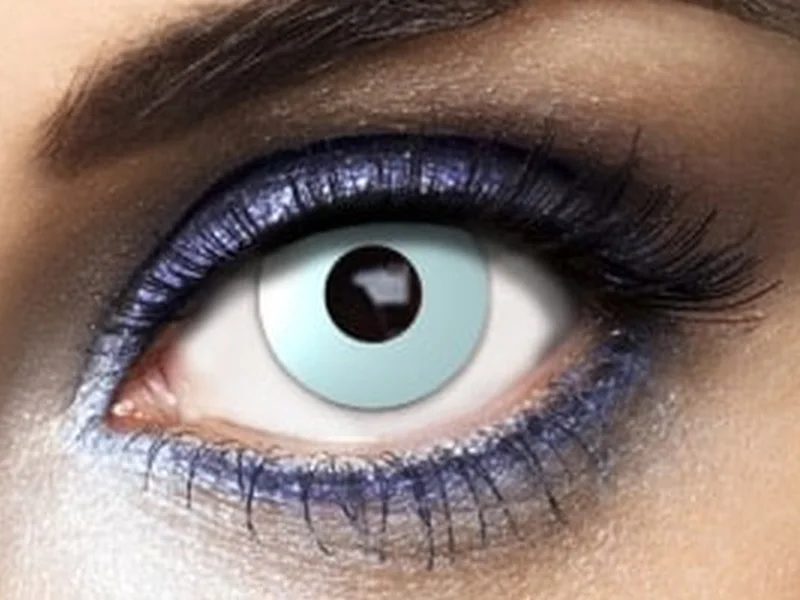
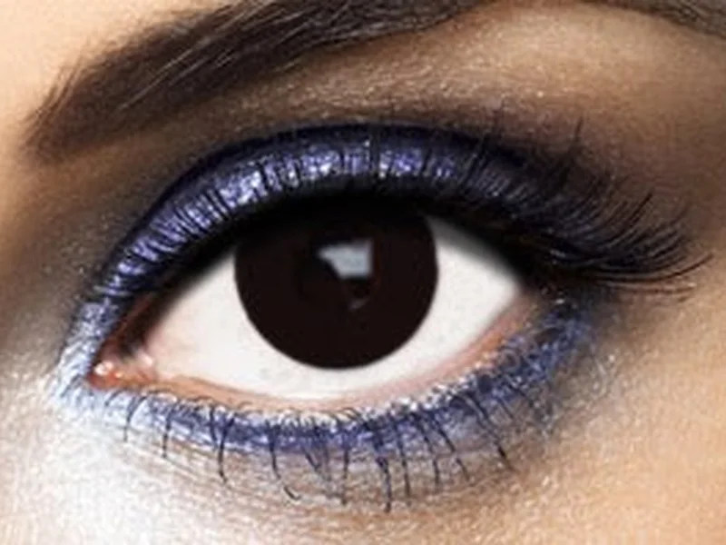

Fashion Lentilles · 15 €
Lentes de contacto · Halloween
Siete modelos de Fashion Lentilles disponibles ya en la tienda por 15 € el par. Lentillas de 7 días, con certificado CE, que te adaptamos y te enseñamos a usar para que el susto sea solo el disfraz.
Lunes a viernes de 10 a 19 h · Sábados de 10 a 14 h · C/ Marjaleta, 3, Moraira
Disponibles en tienda
Lentillas blandas de uso diario durante 7 días. 15 € el par, con la adaptación y la explicación de uso incluidas. Reserva las tuyas: en Halloween vuelan.

Fashion Lentilles · 15 €

Fashion Lentilles · 15 €

Fashion Lentilles · 15 €

Fashion Lentilles · 15 €

Fashion Lentilles · 15 €

Fashion Lentilles · 15 €

Fashion Lentilles · 15 €
Diversión sin riesgo
Una lentilla de fantasía es un producto sanitario: se apoya en el ojo igual que una graduada. Por eso en Senti2 te la adaptamos y te explicamos cómo usarla.
Las de bazares y webs sin control no tienen garantías de calidad ni de higiene. Las de Fashion Lentilles llevan certificado CE y pasan por nuestras manos antes que por tus ojos.
Dejan pasar menos oxígeno que una lentilla normal. Úsalas solo durante la fiesta y nunca duermas con ellas.
Lávate las manos antes de tocarlas y guárdalas en su estuche con líquido para lentillas, nunca con agua. Te enseñamos a ponerlas y quitarlas.
No las compartas ni las prestes, aunque sea un rato: es la forma más rápida de pasarse una infección.
Ojo rojo, dolor, lagrimeo o visión borrosa: quítatelas y, si no mejora, llámanos o acude al oftalmólogo.
Estos modelos no llevan graduación. Si no ves bien sin gafas, pregúntanos: hay modelos de fantasía graduados por encargo.
Dinos qué modelo quieres y te las guardamos. La adaptación y la explicación de uso están incluidas.
Fotos cortesía de Fashion Lentilles. Las lentillas de fantasía son productos sanitarios: su adaptación y venta deben hacerse en un establecimiento sanitario de óptica.